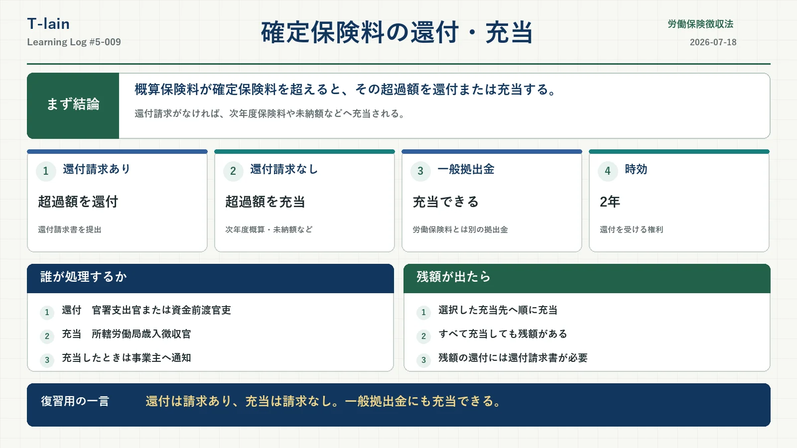

今日のテーマ
年度更新などで確定保険料を計算した結果、すでに納付していた概算保険料の方が多かった場合、その超過額はどのように処理されるのか。
今回は、概算保険料と確定保険料の差額について行われる「還付」と「充当」を整理する。
まず結論
概算保険料の納付額が確定保険料を上回る場合、超過額は、事業主の請求による還付または次年度の概算保険料などへの充当によって処理される。
- 事業主が還付を請求した場合は、超過額が還付される。
- 還付請求をしない場合は、次の保険年度の概算保険料、未納の労働保険料、未納の一般拠出金などへ充当される。
年度更新時に充当を選び、すべての充当先へ充当しても残額が生じる場合は、その還付額について還付請求書を提出する。申告書を提出しただけで、残額が自動的に還付されるわけではない。
根拠条文
労働保険徴収法19条6項
徴収法19条6項では、納付済みの労働保険料が確定保険料を超える場合、政府がその超過額を次の保険年度の労働保険料や未納の労働保険料その他の徴収金へ充当し、または還付すると定めている。
条文には「一般拠出金」という言葉が直接書かれていない。未納の一般拠出金への充当は、労働保険徴収法施行規則37条で定められている。
還付の仕組み
労働保険徴収法施行規則36条では、事業主が所定の時点で超過額の還付を請求した場合、還付を行うものとされている。
事業主が確定保険料申告書を提出する場合
確定保険料申告書を提出する際に、超過額の還付を請求する。
政府が確定保険料を認定決定した場合
認定決定の通知を受けた日の翌日から起算して10日以内に、還付を請求する。
還付手続には、原則として様式第8号「労働保険料・一般拠出金還付請求書」を使用する。
還付請求書の提出先と経由
法令上の請求先は、次のいずれかである。
- 官署支出官
- 事業場の所在地を管轄する都道府県労働局労働保険特別会計資金前渡官吏（所轄都道府県労働局資金前渡官吏）
施行規則1条3項1号に掲げる一般保険料ならびに第1種・第2種・第3種特別加入保険料に係る還付請求書には、還付を行う機関に応じた次の法定経路がある。
- 所轄都道府県労働局長および所轄労働基準監督署長を経由して、官署支出官へ提出する。
- 所轄労働基準監督署長を経由して、所轄都道府県労働局資金前渡官吏へ提出する。
実際の提出窓口としては、管轄の労働局または労働基準監督署が案内されている。なお、令和8年度の年度更新パンフレットでは、所轄都道府県労働局あてに提出するよう案内されている。
手続の主体を区別する
| 処理 | 法令上の主体 |
|---|---|
| 超過額の還付 | 官署支出官または所轄都道府県労働局資金前渡官吏 |
| 超過額の充当 | 所轄都道府県労働局歳入徴収官 |
還付請求をしなかった場合
施行規則37条では、還付請求がない場合、所轄都道府県労働局歳入徴収官が超過額を次のものへ充当すると定めている。
- 次の保険年度の概算保険料
- 未納の労働保険料
- 徴収法の規定によるその他の徴収金
- 未納の一般拠出金
- 石綿健康被害救済法に関するその他の徴収金
条文上は「充当することができる」ではなく、「充当するものとする」と規定されている。歳入徴収官が充当した場合は、その旨を事業主へ通知しなければならない。
還付を受ける権利の時効
労働保険料および一般拠出金の還付を受ける権利は、行使することができる時から2年を経過すると、時効により消滅する。
労働保険料については徴収法41条1項、一般拠出金については石綿健康被害救済法38条1項による徴収法41条の準用が根拠となる。
一般拠出金とは
一般拠出金は、石綿による健康被害を受けた人やその遺族に対する救済給付の費用に充てるため、石綿健康被害救済法に基づいて徴収される拠出金である。
厚生労働大臣が労災保険適用事業主から徴収し、徴収に必要な費用を控除した金額が独立行政法人環境再生保全機構へ交付される。
主な特徴は次のとおり。
- 労働保険料そのものではない。
- 労働保険の確定保険料と併せて申告・納付する。
- 全額が事業主負担となる。
- 一般拠出金率は一律1,000分の0.02。
- 概算払いはなく、確定納付のみ。
- 延納・分割納付はできない。
特別加入者は一般拠出金の算定対象外であり、雇用保険のみが適用される事業の事業主も一般拠出金の申告・納付対象ではない。
一般拠出金にも充当できる理由
一般拠出金は労働保険料ではないが、石綿健康被害救済法38条により、労働保険徴収法の申告・徴収に関する規定が準用されている。
さらに、労働保険徴収法施行規則37条には、労働保険料の超過額を未納の一般拠出金へ充当することが明記されている。そのため、概算保険料の精算で生じた超過額を、年度更新時に納付すべき一般拠出金へ充てることができる。
年度更新申告書の「充当意思」
年度更新申告書では、超過額の充当先について、次の3つから充当意思を示す。
- 労働保険料のみに充当
- 一般拠出金のみに充当
- 労働保険料と一般拠出金の両方に充当
一般拠出金にも充当する場合は「2」または「3」を記入する。「3」を選択すると、労働保険料と一般拠出金の両方に充当できるため、手続が簡便になる場合がある。
概算保険料を延納する場合は、原則として第1期、第2期、第3期の順に超過額が充当される。すべての期と選択した充当先へ充当しても残額がある場合は、その還付額について還付請求書を提出する。
具体例
納付済みの概算保険料が100万円、確定保険料が80万円だった場合、超過額は20万円となる。
次の保険年度の概算保険料が15万円、一般拠出金が5,000円で、両方への充当を選択した場合は次のようになる。
| 超過額 | 20万円 |
|---|---|
| 次年度の概算保険料への充当 | 15万円 |
| 一般拠出金への充当 | 5,000円 |
| 充当後の残額 | 4万5,000円 |
年度更新時に両方への充当を選び、充当後に残った4万5,000円の還付を受ける場合は、その還付額について「労働保険料・一般拠出金還付請求書」を提出する。
過去問
「事業主が、確定保険料申告書を提出する際に、すでに納付した概算保険料の額のうち、確定保険料の額を超える額の還付を請求しない場合には、その超過額を未納の一般拠出金にも充当することができる。」
答え：正しい
還付請求がない場合、超過額は次の保険年度の概算保険料、未納の労働保険料その他の徴収金だけでなく、未納の一般拠出金にも充当される。
ただし、施行規則37条の法令上の表現は「充当することができる」ではなく、「充当するものとする」である。
試験対策のポイント
- 還付請求があれば、超過額を還付する。
- 還付を行う者は、官署支出官または所轄都道府県労働局資金前渡官吏。
- 還付請求がなければ、次年度の概算保険料や未納の一般拠出金などへ充当する。
- 超過額の充当を行う者は、所轄都道府県労働局歳入徴収官。
- 充当した場合、歳入徴収官は事業主へ通知しなければならない。
- 充当後に残る還付額は、申告書だけでは自動的に還付されない。
- 還付を受ける権利は、行使できる時から2年で時効により消滅する。
- 一般拠出金は労働保険料ではないが、確定保険料と併せて申告・納付する。
今日のまとめ
概算保険料の納付額が確定保険料を上回った場合、その超過額は還付または充当によって処理される。還付請求がなければ、次年度の概算保険料や未納の労働保険料、未納の一般拠出金などへ充当される。
還付と充当では手続の主体が異なる。充当後も還付額が残る場合は還付請求書が必要であり、還付を受ける権利には2年の時効がある。
復習用の一言まとめ
還付は「支出」なので支出官・資金前渡官吏。充当は「徴収」の整理なので歳入徴収官。